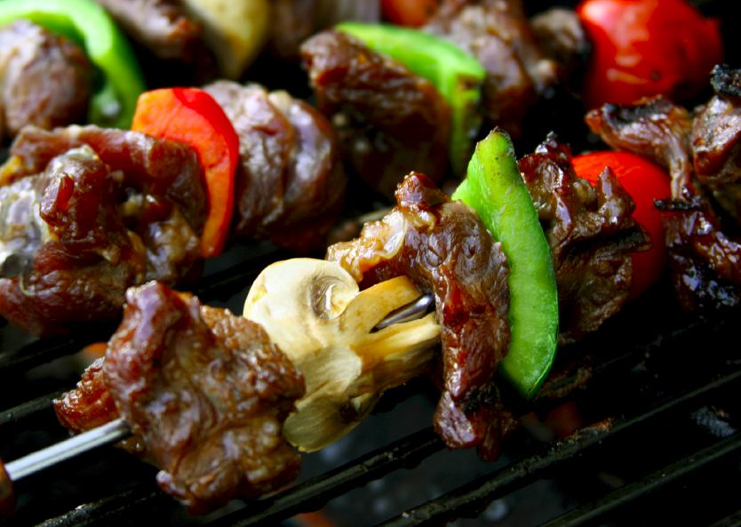

What's the Beef?
Carcinogenicity from cooked meats
Melissa Lock
Fall 2005

Research shows that chicken may not necessarily be a healthier
alternative to beef. Whether you eat chicken, beef, or pork, chances
are that any type of cooked meat contains a number of chemical
carcinogens. Worldwide research indicates that cooking meats at high
temperatures creates carcinogenic chemicals that are absent in uncooked
meats. These chemicals called heterocyclic amines (HCAs), form in a
variety of meats including pork, beef, fish, and fowl.
The National Toxicology Program, a division of the
National Institutes of Health, has recently added three HCAs (2-ami-
no-3,4-dimethlimidazo[4,5-f]quinoline (MeIQ),
2-amino-1-methyl-6-phenylimid- azo[4,5-b]pyridine (PhIP), and
2-amino-3,8-dimethylimidazo[4,5-f]quinoxaline (MeIQx)) to their list of
potential human chemical carcinogens. Although the cooking methodology,
type of food preparation, and cooking time all contribute to the amount
of carcinogens produced in the meat, these chemicals are primarily the
result of cooking at high temperatures.
HCAs, produced by cooking muscle meats, are formed
from their amino acid precursors. Researchers at the Lawrence Livermore
National Laboratories in Livermore, California, mixed phenylalanine and
creatine (both naturally present in animal muscle) to reflect the
proportion of both amino acids normally present in raw beef. By
dry-heating the mixture at 200°C, the researchers found that PhIP was
produced in similar amounts to those amounts formed from cooking beef
on a grill. Another study conducted by the National Cancer Institute’s
research labs found that the amount of HCAs increased threefold in
meats when the cooking temperature was raised from 200°C to 250°C.
Michael Malfatti, PhD, who has been investigating HCAs at the
laboratories for over 13 years, articulates that “the correlation is
that the longer and hotter you cook your food, the more HCAs are
formed. Therefore, the more heat that is applied, the more HCAs will be
formed.”
Since frying, broiling, and barbequing involve
cooking at very high temperatures, they are considered to be the
cooking methods that produce the largest amounts of HCAs. Dr. Malfatti
emphasizes that “any cooking method that uses high temperatures [from]
200° C - 300° C will form them.” Other methods of cooking that involve
lower temperatures (e.g. basting and roasting) produce a lower amount
of HCAs.
Cooking meats in water is a different story.
“Stewing, poaching, and boiling produce little to no amounts of HCAs
because they involve cooking temperatures at or below 100°C. You can
never make the temperature go higher than the boiling point of water,”
says Leonard Bjeldanes, PhD, of the University of California, Berkeley.
“Because it can’t heat up as high, the metabolic activation of these
carcinogens will not occur.” It is important, however, to point out
that this does not include pressure cooking, which does allow water to
boil over 100°C.
So what do HCAs actually do? HCAs are known to cause
irreversible damage to DNA. Dr. Malfatti confesses that although many
researchers have dedicated their entire careers to studying the
multi-step mechanism, it is still not yet fully understood. “HCAs are
pro-carcinogens, which means they need to be metabolized to become
bioactive. Once metabolized, the bioactive metabolites can bind to DNA
and cause mutations. If you get enough mutations and cell
proliferation, tumors can form.”